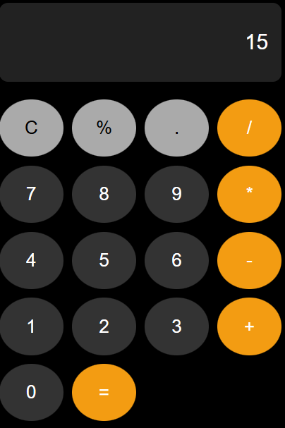
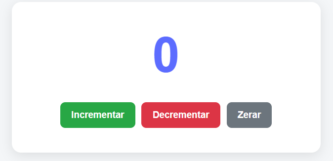
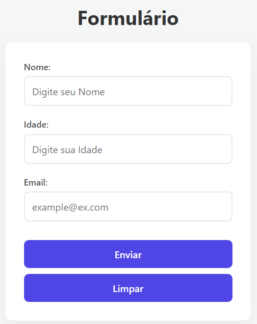

Olá, eu sou
Madhier Lima
Desenvolvedor Front-end
Estudante de Tecnologia em Análise e Desenvolvimento de Sistemas na UNINOVE, apaixonado por tecnologia e desenvolvimento web.
Sobre Mim
Minha jornada na programação começou antes mesmo da faculdade, quando iniciei meus estudos com o apoio de uma mentoria. Desde então, venho construindo minha base em HTML, CSS e JavaScript, buscando transformar cada novo conhecimento em prática.
Atualmente, estou no 2º semestre de ADS na UNINOVE e continuo evoluindo por meio de estudos, projetos e novos desafios. Meu objetivo é me desenvolver como desenvolvedor Front-end, criando interfaces funcionais, intuitivas e com uma boa experiência para o usuário.
Mais do que aprender tecnologias, gosto de entender como as coisas funcionam, resolver problemas e transformar ideias em projetos reais.
Estou em busca da minha primeira oportunidade em tecnologia, onde possa aprender com profissionais, colocar meus conhecimentos em prática e continuar construindo minha carreira.
Habilidades
HTML
Estrutura e semântica de páginas web
CSS
Estilização e layouts responsivos
JavaScript
Lógica e interatividade
Projetos

Calculadora
Projeto desenvolvido como atividade acadêmica para praticar conceitos de HTML, CSS e JavaScript na criação de uma calculadora funcional.

Contador
Projeto desenvolvido como atividade acadêmica para praticar lógica de programação e interatividade com JavaScript por meio de um contador.

Validação
Projeto desenvolvido como atividade acadêmica para praticar JavaScript na validação e manipulação de dados inseridos pelo usuário.
Formação
Tecnologia em Análise e Desenvolvimento de Sistemas
UNINOVE
2026 - Atualmente
Contato
Estou aberto a novas oportunidades e desafios na área de tecnologia.
Entre em contato comigo através dos links abaixo.